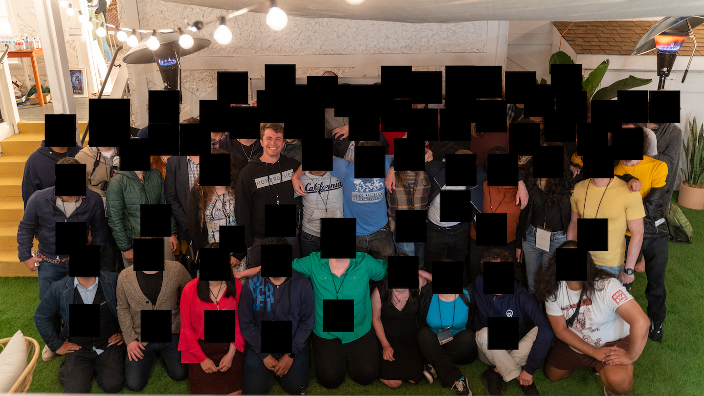

2022 Rationality Retreat
Experiences and thoughts from the 2022 meetup organizers retreat in Berkeley, CA. For reference, I am the organizer for the Dallas Rationality meetup group.
Contents
Sequences (of Events)
I put off writing this for too long and didn't journal like I should have during the retreat. As a result, I've forgotten most of what happened and in what order. Below is a bulleted list in approximate order gathered from memory and the Google Calendar calendar that was set up.
Thursday was mostly introductions and getting comfortable with the other organizers.
-
I first met SP in the garden area, hitting it off with some jokes and discussion of books. We sent out an open lunch invitation to the wider group and got two stragglers just arriving: PL and SB. We made the 0.5 mi walk to Humbowl, a "health food restaurant" off College Ave. Delicious food! There we met up with SS. Conversation jumped around before we headed back to the hotel to meet others and continue settling in.
Friday was a very structured day with all attendees attending identical sessions led by different people (i.e., group X went to the purpose session led by A and group Y went to the purpose session led by B). Each session lasted around an hour with a 5-10-minute grace period between to allow for overflowing conversations and general mingling around the snacks.
-
I was up early as expected and did some stretching/bodyweight exercises with others in the courtyard.
-
The first session was "Defining the purpose of your community"
-
The second session was "Recruiting and Advertising"
-
The third session was "Soft skills: Welcome and retaining community members"
-
The fourth session was "Trio walks": I walked with MD and SN from the venue to and around UC Berkeley. We chatted about a variety of things, including the average rationality meetup gender ratio, children, and our personal lives.
-
The fifth session was organizing projects and learning at meetups.
-
The sixth session was the theory of community building. Here was sat in small groups and talked about what community means to us and how we are going about developing our own.
-
The seventh session was a hacking night. Some people worked on programs that automatically cross-posted events between different platforms (LessWrong, etc). I mostly sat with SA and WD and discussed creating a regional meetup for the southern states.
Saturday consisted almost entirely of organizer-selected-and-led topics. Organizers could pick and choose which sessions to go to.
-
My first session was led by HT on rational values. We took a quiz based on Yudkowsky's Twelve Virtues of Rationality and found that the group had a range of scores. I was surprised that some scored lower based on my conversations with them. This was a productive session.
-
My second session was on finding a good venue. We discussed what makes a good venue vs. a bad one, and how to seek those out in our respective cities. Organizers offered up what worked and didn't work for them, giving solid ideas to others.
-
My third session, led by ES, was on owning projections and had the following description:
Whether I like or dislike someone from the starting impression is very influential on how I treat them. In this session we practice and talk about our surface perceptions of other people and see if they are accurate. I really love working with projections because it calibrates my intuitive senses and makes me better at working with people. This session can be confronting and you can find out how you "appear" to other people. Join us to get uncomfortable and see what you can learn!
This was one of my favorite sessions. We paired off and gave our initial impressions about others, trying our best not to censor any thoughts while remaining tactful. I got tech and frat bro from my partners. The partners merged back and discussed our results: were we surprised about others' thoughts? Did we expect something drastically different? Are we giving off the vibes that we want to?
-
The rest of the night was spent outside chatting with SA and WD about a variety of topics.
Sunday was the same format as Saturday, albeit a bit more of a free-for-all.
-
My first session, led by WD, was on getting experts to speak at meetups. He gave his super top secret formula that got Vitalik Buterin on his podcast.
-
My second session, led by TC, was on creating a rationality "scene". See my detailed thoughts below.
-
The closing session consisted of us getting a copy of The Art of Gathering, taking a survey, and answering some questions.
-
The afterparty was fun.
Thoughts
Each thought is split up into an actual thought and some possible actions I may or may not take.
Scenes
One of, if not the, biggest takeaways I got was from the idea of "scenes". TC brought this up as it related to both his and others' experiences in music: the Roots started out just jamming together and eventually made a record label, while TC's friends and bandmates would hang together in the same areas/venues, working on different projects, bouncing ideas off of each others, and helping each other out as needed. I'm a bit disappointed I didn't make this connection earlier considering what I'm trying to do with my training partner ad and emulating Gym Jones' initial success and reputation.
This is how revolutionary ideas are formed. This is how things get done. This is how progress is made.
A few examples of scenes that were brought up (note there is a common thread, a shared interest within each scene):
-
Manhattan Project: Employed some of the smartest scientists in the world, including Feynman, Fermi, Teller, von Neumann, and Szilard.
-
Gym Jones: Brought together some of the best athletes from a variety of disciplines, including fighting, climbing, and cycling, into a single space. Athletes were ultra-competitive and worked harder due to the peer pressure of others.
-
Incubators:
A startup incubator is a collaborative program for startup companies — usually physically located in one central workspace — designed to help startups in their infancy succeed by providing workspace, seed funding, mentoring and training.
-
Café Central: A Viennese café that served as a meeting point for intellectuals, such as Adler, Trotsky, and later Freud, Stalin, and Lenin.
-
Founding Fathers
Qualities of the group include:
-
Positive in-group competition: This is the only way to get substantially better at something. Competition is required and should be encouraged.
-
Shared values: As mentioned, there is something common holding the scene together, even if interests are slightly different. For Gym Jones it was sport, for incubators it's the desire to make it, etc.
-
"Rising tide raises all ships": Everyone will benefit from the scene, albeit some more than others. Scenes are non-zero sum.
-
Desirable: Others should want to join the scene whether due to its exclusivity, the content/people it produces, or the benefits offered.
-
Access to tacit knowledge and mentorship: Some scene members are preferably experts or significantly experienced in their fields and can provide a wealth of knowledge to the less experienced.
-
Willing to donate time and energy: The potential results must be worth someone wanting to donate their time and energy towards improving the scene.
Actions
Making our meetup group more of a scene has become a priority for me. I'll attempt to get people to be more open about their interests and engage with them to some degree based on my interest in the topic.
People
There are so many interesting people out there. Some topics of discussion/things people there were working on:
-
Why is the labor participation rate 60%? What are the 100 million people that aren't participating doing? How can we engage them and harness the potential?
-
Deliberate practice, hard first practice, and what it takes to progress in skill-based activities
-
The future of self-driving cars and considerations that aren't often taken into account
-
Ways to attack economic inefficiencies, like the Jones Act
-
Georgism
-
The differences in communication norms and ability between generations
-
Translation strengths of various Russian-English translators
-
American Sign Language and its nuances
-
Economics, the production of money, and the current state of the U.S. economy
-
Russia-Ukraine war
-
AI safety (who would've guessed)
-
Spaced repetition
-
The power of accountability partners/groups and one-on-ones
-
Sushi (at a depth much, much greater than I've ever had or heard)
-
Christopher Alexander's A Pattern Language
-
Attracting unfit people to fitness
-
Metascience
-
Kidney stone reduction as an EA cause
Actions
There are two options to meeting more interesting people through this group:
-
Continue to grow without any direction, leading to 1:x ratio of interesting:not interesting
-
Focus on "recruiting" from interesting sources
While the two aren't mutually exclusive, they both require effort (the latter more than the former), so it should be concentrated on targeted recruiting. Where this will be done I do not know.
But maintenance of the friendships (I'd argue they are genuine friendships despite the short duration) must also be considered. As usual, quality trumps quantity of friendship, so I'll focus on keeping up with a few select people I really got along with and see myself keeping up with. This list includes JE, JS, SA, TC, and WD. Keeping up isn't always phone calls, but can be a simple message, thought, or link, so long as it somewhat relates.
Purpose
First and foremost, the purpose and goal of a meetup must be defined. It guides the events that are planned, the decisions that are made, and the overall direction of the group. This being one of the first mandatory events on Friday was an excellent call, as it set the foundation (or at least prompted questions we could all have in the front of our minds throughout the weekend) for how we interpreted sessions and chose which ones to attend.
Acknowledgements
Massive thanks to CW and the entire LessWrong team for putting this on. It was an incredibly impactful weekend for both myself and others.

Most SSC/ACX/Rationality organizers in one picture
See Also